Nyzo version 547 (commit on GitHub) gives the sentinel the ability to send blocks for verifiers joining the cycle.
This version affects the sentinel and the verifier.
On the surface, sending blocks for new verifiers seems like an obvious, relatively simple modification to the sentinel. However, when details of implementation and required information are considered, troubling complexities creep into a number of possible solutions.
The obvious major difference between verifiers and sentinels is the number of verifier identifiers for which each is responsible. The sentinel must consider the health of every verifier it manages, and misunderstandings about the state of new-verifier voting could cause the sentinel to transmit a block for an incorrect new verifier. This could leave in-cycle verifiers unprotected for a block.
In order to maintain robust protection for in-cycle verifiers, the sentinel must have a separate process for determining which out-of-cycle verifier to assist. However, knowing which verifier to assist requires knowledge of new-verifier voting, which is only available to in-cycle verifiers. While many users trying to join the cycle already have in-cycle verifiers, many others do not, so this raises concerns about potentially more-effective behavior for sentinels that have access to in-cycle verifiers. Such behavior would hurt cycle diversity, which makes it unacceptable.
The solution contained in this version is, fundamentally, a brute-force solution. At appropriate times, the sentinel sends blocks for every out-of-cycle verifier it manages. However, these transmissions occur selectively, efficiently, and at a time when cycle messaging activity is at a relatively low level. So, they will not adversely affect cycle performance now, and they will not adversely affect cycle performance even if the queue grows to be substantially larger than it is now.
In Block.getMinimumVoteTimestamp(), the previous logic has been encapsulated in BlockManager.likelyAcceptingNewVerifiers(). Similar logic was introduced in other places in the code in this version, and the method was added to improve readability. The logic has actually changed slightly: the previous method looked at the height of the block being processed and the new method looks at the height of the frozen edge. However, both calculations are rough approximations of a more complex cycle calculation, and they are close enough to one another to be considered interchangeable.
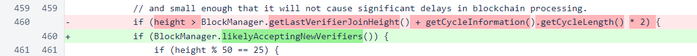In BlockManager, the likelyAcceptingNewVerifiers() method has been added. For additional safety, the frozen edge and the cycle information of the frozen edge are ensured to be non-null before being accessed.
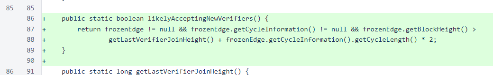In MeshListener, udpBufferSize has been modified. The overhead of a message is always 110 bytes. The UDP buffer previously had room for message payloads as large as block votes, which occupy 8 bytes for block height, 32 bytes for the block hash, and 8 bytes for the timestamp, for a total UDP buffer size of 158 bytes. The size is now 182 bytes to allow the 72-byte MinimumBlock payload, which has an 8-byte timestamp and a 64-byte signature, to be received over UDP.
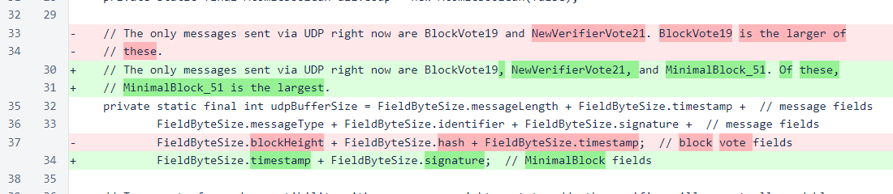In processing of the UDP messages, the type is now checked before full processing of the message. The Nyzo code generally avoids bit-shift operations, as they tend to be difficult to read and easy to write incorrectly. However, the efficiency provided in this case justifies one difficult-to-read line of code. Minimal-block messages are processed in a new method, and other UDP messages are processed as they were processed in the previous version.
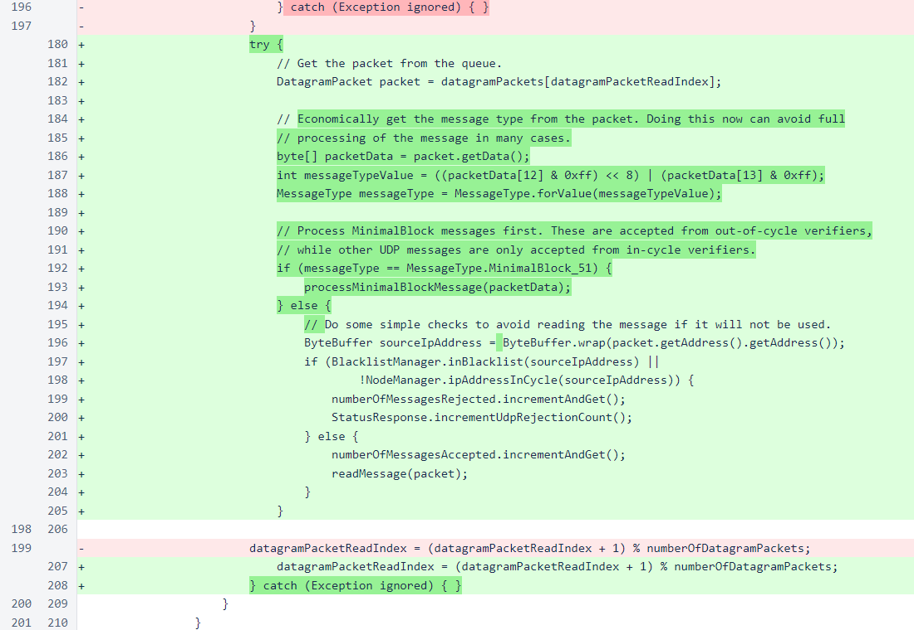In the processMinimalBlockMessage() method, a number of checks are performed to avoid processing for messages other than those received at the correct time from the correct identifier. If the block appears to be coming from the top new verifier, the full block is rebuilt. If the rebuilt block is valid, it is registered with UnfrozenBlockManager.
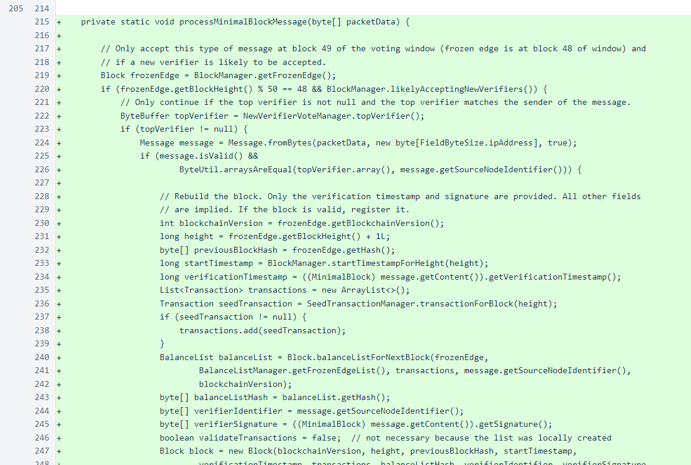In Message.processContent(), a case has been added for MinimalBlock messages.
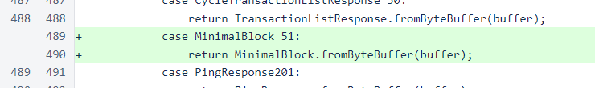In MessageType, values have been added for minimal blocks and the corresponding response. Though the response is unused in the current version of code, a type has been put in place so that it will be available if a TCP form of this message is ever required.
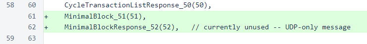Also in MessageType, a map has been added for quick lookup of message types from their corresponding integer values. Additionally, a script used to generate a Javascript file for an early version of the nyzo.co website has been removed.
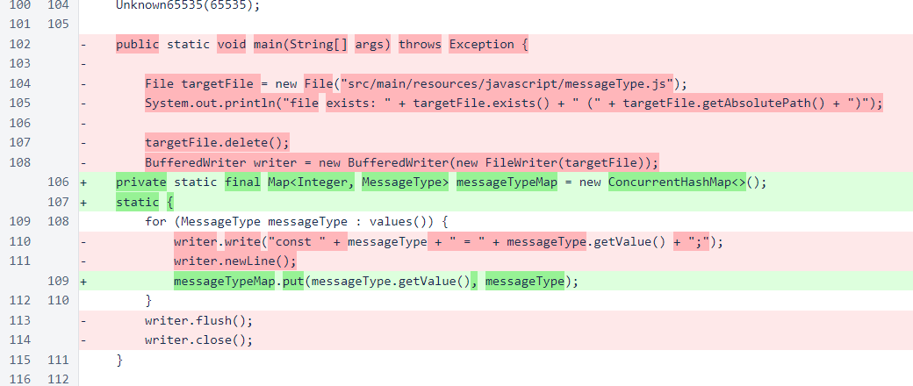MessageType.forValue() uses the new map to replace the comically inefficient iterative method. Aside from efficiency, the behavior is unchanged.

In NewVerifierVoteManager, the top verifier is now stored in a field so that it can be provided more efficiently. The previous method that would calculate and return the top verifier on demand has been modified to refresh the top verifier and store it in this field. Previously, the topVerifier() method was used infrequently, so the on-demand calculation was not a concern. Its new use in MeshListener.processMinimalBlockMessage(), which is used in the performance-sensitive UDP processing loop, required a more efficient solution.
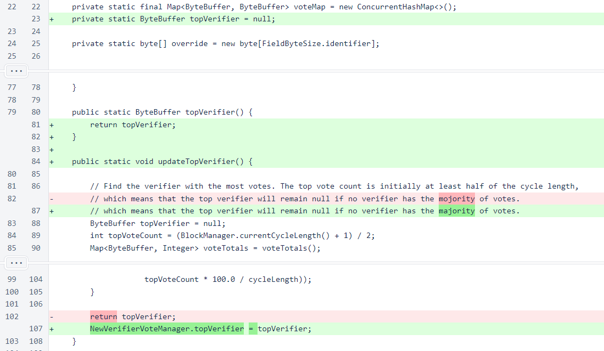The reset() method was added to the PersistentData class to streamline resetting the state of verifiers in the testnet.
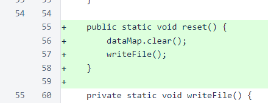In Verifier, the top new verifier is updated each time a block is frozen.
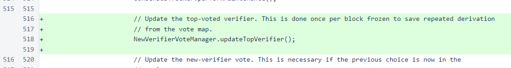The MinimalBlock class encapsulates the timestamp and block signature of a block. All other fields can be implicitly derived by the receiver of the block.
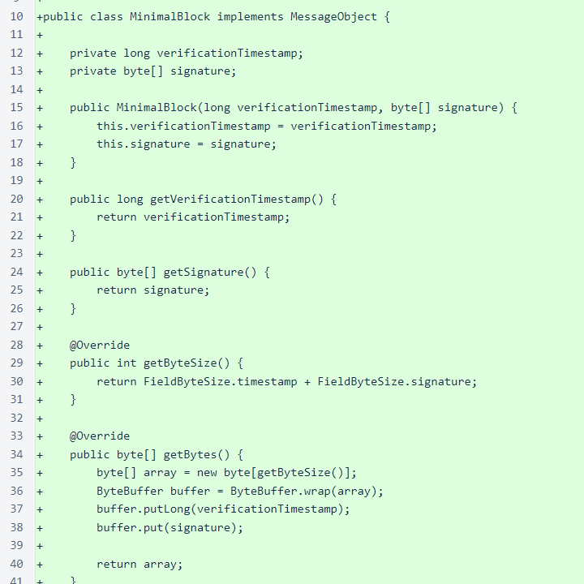In Sentinel, a separate thread is started for sending blocks for new verifiers. As recent issues have clearly illustrated, even seemingly innocuous changes to the sentinel can cause serious problems. Keeping the new-verifier process completely separate from protection of in-cycle verifiers provides a small assurance that in-cycle verifier protection will not be compromised by the changes in this version.
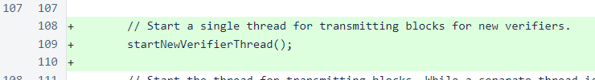The sentinel thread that sends blocks for new verifiers is simple. At appropriate heights, blocks are created and broadcast for every out-of-cycle verifier that the sentinel manages.
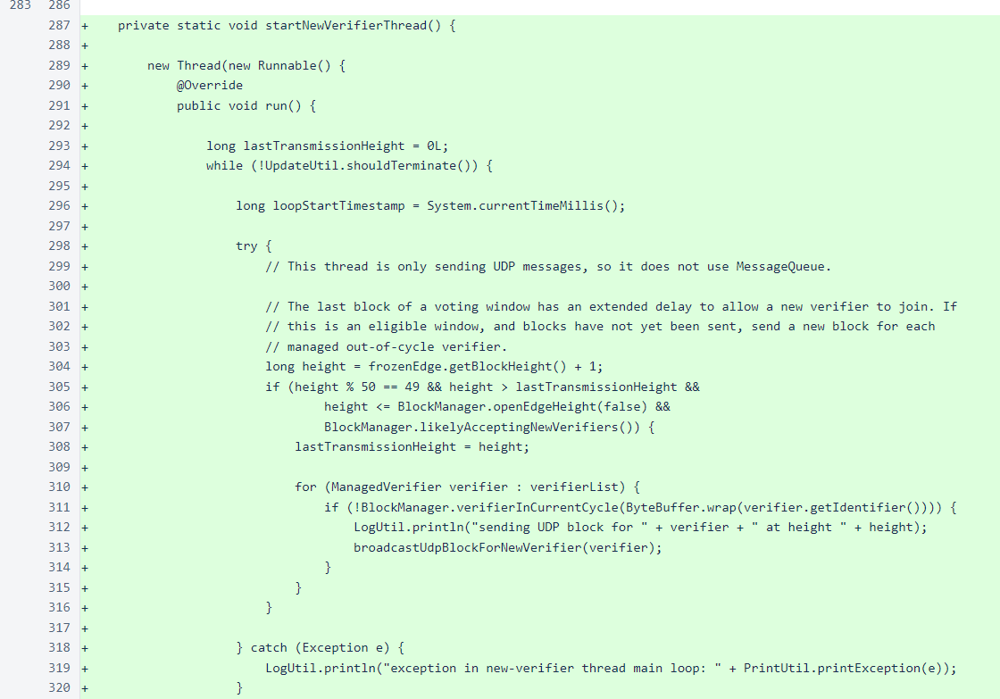The broadcastUdpBlockForNewVerifier() method uses the same createNextBlock() method that is used for in-cycle verifiers. However, instead of sending the full block, a MinimalBlock message, containing only the block signature and verification timestamp, is sent.
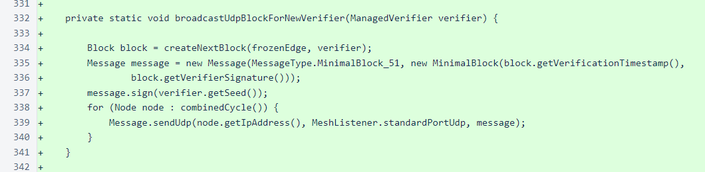Sentinel transactions are not added to blocks created for out-of-cycle verifiers.
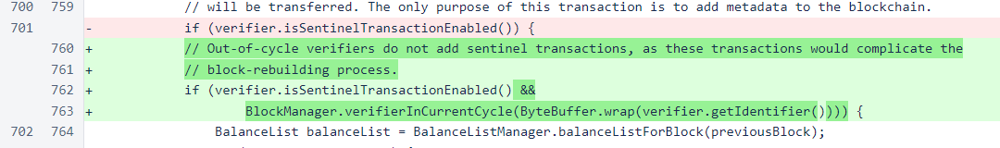In UpdateUtil.reset(), the new PersistentData.reset() method is now called. The reset process would rarely, if ever, be used to reset verifiers on the production blockchain. However, for the testnet, this method is a convenient way to restart an existing mesh with a new Genesis block.
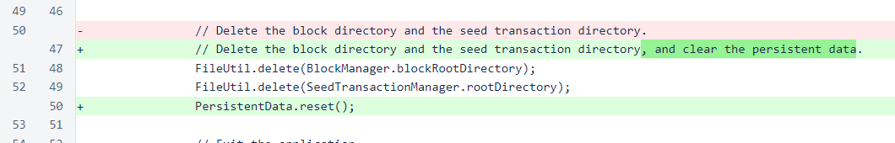Thoroughly testing this update on the production blockchain was impractical. Various modifications were made to the logic to allow MinimalBlock messages to be transmitted and processed, but a complete test would have required the ability to manipulate the new-verifier voting among the cycle. Obviously, we do not have such power. So, a small testnet was configured, and manual vote overrides for a non-existent verifier were sent to all in-cycle verifiers in the testnet. A sentinel was then started to manage that verifier identifier, and the minimal block broadcast by the sentinel allowed that verifier to join in every test conducted.
In additional to sentinels needing to update to begin sending blocks for new verifiers, the verifiers currently in the cycle will need to update to receive those blocks. However, even a single verifier running this version would likely be sufficient for relaying sentinel blocks to the cycle. When a verifier receives a block that deserves a block vote, that vote is sent almost immediately, which triggers other verifiers to start requesting the missing block. Due to this mechanism, blocks are quickly distributed throughout the cycle, even if their initial distribution is poor.